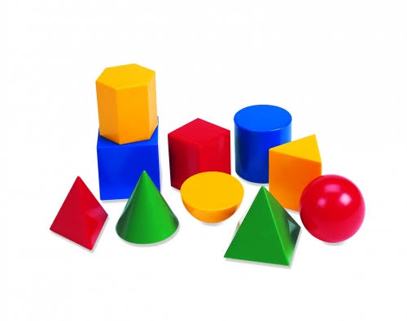

เรขาคณิต (Geometry)

เรขาคณิต (Geometry) คือ แขนงหนึ่งของวิชาคณิตศาสตร์ที่ศึกษาเกี่ยวกับ รูปร่าง ขนาด ตำแหน่ง มิติ และสมบัติของพื้นที่ เพื่อเข้าใจโครงสร้างของสิ่งต่าง ๆ ในเชิง空間 (Space) ทั้งในแบบ 2 มิติ และ 3 มิติ องค์ประกอบหลักของเรขาคณิตองค์ประกอบพื้นฐาน: จุด เส้น ระนาบ และมุม ซึ่งเป็นส่วนประกอบแรกเริ่มในการสร้างรูปทรงต่าง ๆรูปเรขาคณิต 2 มิติ: รูปที่มีเฉพาะความกว้างและความยาว (ความแบน) เช่น รูปสามเหลี่ยม สี่เหลี่ยม วงกลม และรูปหลายเหลี่ยม เน้นการหาความยาวรอบรูปและพื้นที่ รูปทรงเรขาคณิต 3 มิติ: รูปที่มีความกว้าง ความยาว และความหนา/ลึก (มีความจุ) เช่น ลูกบาศก์ ปริซึม ทรงกระบอก พีระมิด กรวย และทรงกลม เน้นการหาพื้นที่ผิวและปริมาตร การประยุกต์ใช้: ใช้ในงานสถาปัตยกรรม การวิศวกรรม ออกแบบสิ่งก่อสร้าง งานศิลปะ ไปจนถึงระบบพิกัดทางภูมิศาสตร์ (GPS)